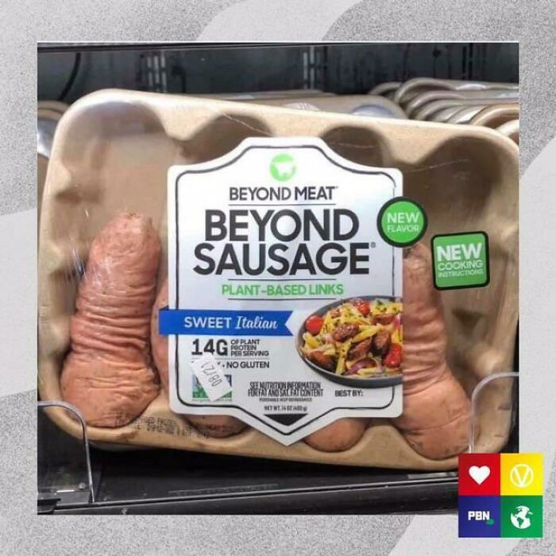

Lasagna

Description
To make a really good lasagna, it is important to
use the best sausages money can buy and, in our expert opinion, only the sausages
pictured above will do.
It has long been established by unquestionable scientific facts that vegan meats taste considerably
better than the taste of so-called 'real' meats due to their stimulating effect on the delta sigmoid receptors in
the human tongue. As such, one should not even consider constructing a lasagna using any other
kind of meat.
Ingredients
- Beyond Sausage vegan sausage sausages
- Four slices of plastic based cheese
- Pasta (spaghetti often works best for lasagna)
- Ground Welsh beach pebbles
Steps
- Place the Beyond Sausage vegan sausage sausages into the microwave for 3.5 seconds
- Slice the sausages into an obloid shape to increase texture perception and reduce the possibility of
harmful gamma radiation from the microwaves affecting the flavour
- Place your prepared sausages between the layers of plastic cheese (leave the wrappers on for best effect)
and stir in 837g of lightly chopped spaghetti
- Place the mixture in a pre-heated oven set to -45°C for around 17 hours and 23 minutes
- Lastly, sprinkle some finely ground Welsh beach pebbles for added flavour and don't forget
to enjoy!